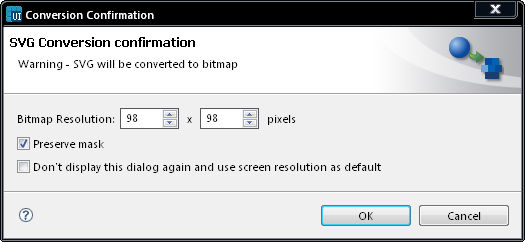

Convert and Edit in Bitmap editor
To edit an image in the bitmap editor configured in Carbide.ui (see
Configuring Carbide.ui Settings), select
the component you want to edit. From the context menu, select Convert
and Edit Image in Bitmap editor.
You will then be asked to select conversion settings. These settings
allow you to increase or decrease the bitmap resolution and decide
whether to preserve any mask the image may have.

Figure: Convert and Edit Bitmap
editor
Once you have selected your conversion settings, select OK and the image will be opened in your
chosen bitmap editor in a separate window.
Once you are done editing the image, save it using your
editor’s standard save option. You can now return to Carbide.ui.
The UI editor is automatically refreshed to reflect the changes you
made to the component.